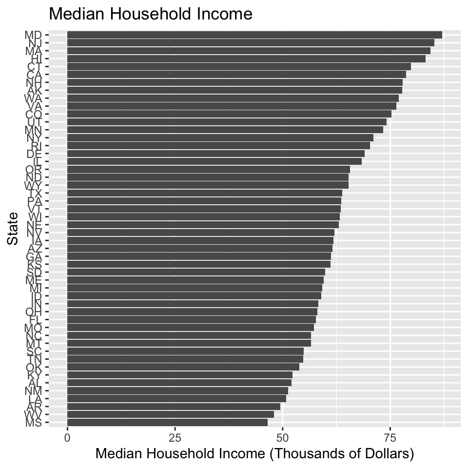
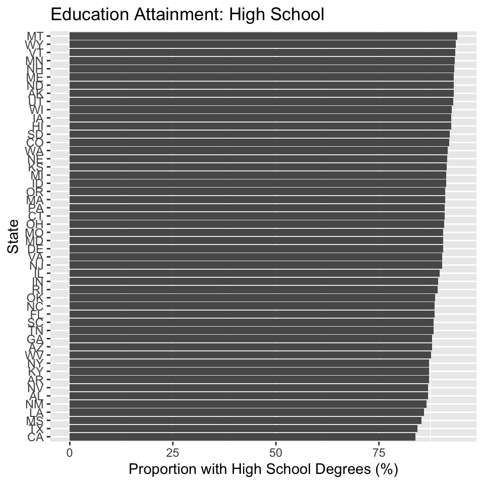
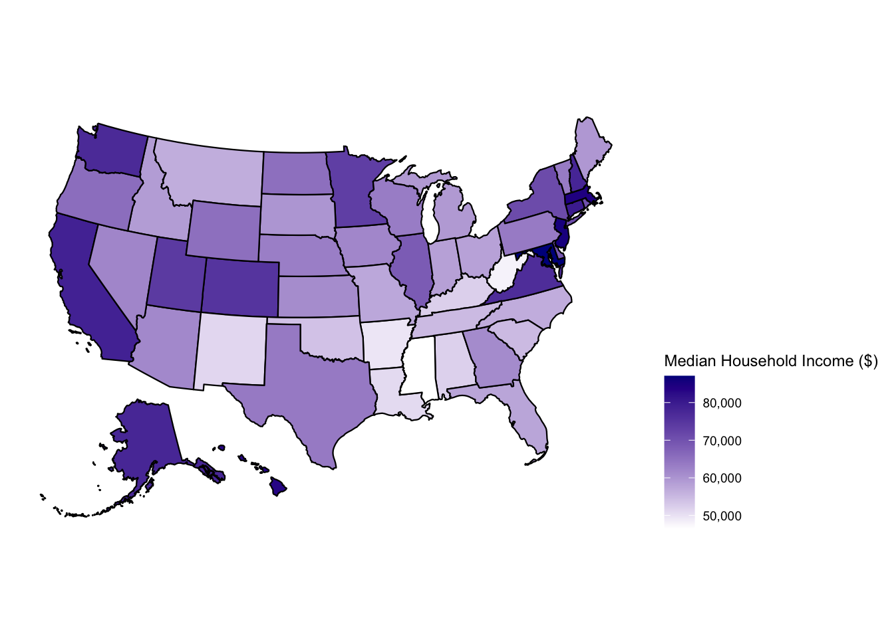

Chapter 4 Results
4.1 Data Exploration
Let’s take a look at each variable separately by each region:
4.1.1 Population density

We can see that the New England region has a significantly higher population density than the rest of the United States, considering that the first American colonists settled in this region, and resources such as trade routes, education and employment opportunities are most abundant there. States that also have large population densities include California, Florida, New York, as well as midwest states. States such as Alaska, Montana, Wyoming, etc. are mostly wilderness and rural regions, and do not have a high population density.
Income (Average and Median):  We can see that the mean and median incomes are very similarly distributed, with the mean being substantially higher than the median likely due to outliers – there are exceptionally rich people in almost every state. We can see that the northeast regions has the highest income, mostly due to the abundance of economic resources, such as education, employment, and trade routes. We also see high hosuehold income in states like California and Washington, as they are home to employment opportunities especially the major tech industries (Google, Facebook, Amazon, etc.). States mostly dominated by working-class such as West Virginia and Mississippi, have the lowest mean and median income.
4.1.2 Education (percentage with college/high school degrees)

We can see that the most educated areas in terms of college attainment are in the northeast, as well as Colorado. It is not a surprise that the northeast region has the highest proportion of college attainment, as it is the home to prestigious colleges such as Ivy League schools as well as the oldest universities of America. We see that Colorado also has a very high college attainment rate, as shown in this article, which is mostly because college is becoming more affordable in the state. We see that West Virginia has the lowest higher education rate, as much of the labor force is cheap and do not require a college degree as described here.
For high school attainment, we see the largest states, California and Texas, has the lowest high school graduation rate, mostly due to income inequality issues link, link). Most of the US states have very similar high school graduation rates.
4.1.3 Smoking

We can see that the smoking rates for West Virginia, Kentucky, and Louisiana are the highest. In prior heat maps, we’ve shown that West Virginia has one of the lowest household income and college education rates, as it is mostly dominated by working class. In fact, the 12 “Tobacco Nation” states (Alabama, Arkansas, Indiana, Kentucky, Louisiana, Michigan, Mississippi, Missouri, Ohio, Oklahoma, Tennessee, and West Virginia) all have a high smoking rate, as they share the similar challenges of low income, a paucity of infrastructure and health-care resources, as well as a lack of anti-tobacco policies according to this article. Utah has the lowest smoking rate, partly due to a large religious population.
4.1.4 Cancer

We can see that South Dakota and Iowa have (reportedly) low cancer rates. South Dakota is one of the top states in terms of early diagnosis of cancer. It also seems strange that Iowa has a low cancer rate, as this article contradicts this argument. This might be an error in terms of the data points, since the data was reported via a third-party website. For the most part, however, most of the states have very similar cancer rates. Because there is so much variation in cancer causes, it is very difficult to analyze why each states have certain causes of cancer (https://www.jimmyfund.org/about-us/news-and-publications/announcements/which-u-s--states-have-the-highest-cancer-rates-/).
4.2 Relationship between Variables

We see a very high negative correlation between the smoking rate and the household income (median and mean), smoking rate and college graduation rate, as well as a high positive correlation between income and college graduation rate. Evidently, states with more higher-income households can better afford higher education (such as college), and those that can attain higher education are much less likely to be smokers. This matches our prior hypothesis that the well-educated are much less likely to be smokers.
Notice we emphasized higher education such as college, since we see that high school graduation rate does not correlate as strongly with income or smoking rates. This is most likely because there are high school districts in the United States that offer free-lunch or reduced-price lunch, where enrolling into high schools costs little to none. This emphasizes the importance of getting a college degree, as people with a college degree are not only less likely to smoke, they are also better prepared to get employed for the future.
Earlier research also showed that low income countries cannot afford cigarettes and hence have low smoking rates; middle income countries have highest consumption of smoking since they do not have adequate education regulations; high income countries are better able to afford higher education, and have a lower smoking rate. However, when we do this analysis on the 50 US states, we get a direct negative correlation between income and smoking rates, and an even stronger positive correlation between income and college graduation rates. This is due to the earlier claim that higher income households are more likely to afford higher education, and those that attain higher education are less likely to become smokers. This is also an example of Simpson’s paradox, where a certain correlation between two variables across different countries does not imply that the same correlation will exist within a single country - it may have no correlation, or even an opposite correlation. In data science, it is a terrible practice to generalize one theory across groups within a group.
What is surprising is that the positive correlation between smoking rates and cancer rates is weaker than expected. This can most likely be attributed to the fact that cancer is not only cause by smoking, but also many other factors (e.g. obesity, age, alcoholism, etc.). Cancer cases can also be divided into multiple types of cancer, such as lung cancer, heart disease, colon cancer, etc. This, however, does not contradict the fact that smoking is a significant factor. If we have chosen a dataset for a specific type of cancer (e.g. lung cancer), the correlation would likely be much higher.